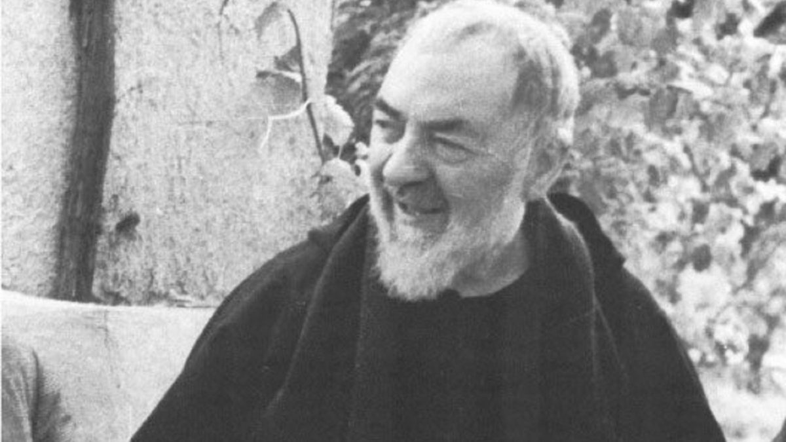

Day 10 — Padre Pio → Castello di Septe
Saturday, May 30, 2026

PLACES & MAP LINKS — tap any place to open in Google Maps
⛪ Visit — 11:00 AM — 📍 Sanctuary of San Pio (San Giovanni Rotondo)
Crypt fully accessible. Tomb of Padre Pio in lower church (Renzo Piano).
🍴 Walk-in lunch — 1:00 PM — 📍 La Piccola Baita (lunch — top pick)
Viale Padre Pio 4. ~€15-25/pp. Real Pugliese food.
🍴 Backup — 📍 Trattoria Chiazza Ranna (lunch backup)
Via Pirgiano 78. 5-min drive into centro storico.
🏨 Hotel — ~4:15 PM — 📍 Hotel Castello di Septe
Mozzagrogna, Chieti. Wedding venue. Booked.
SIDE QUESTS
⚡ 📍 Walk the new Padre Pio church upper terraces (Rob & Maddison only)
After visiting the tomb together, Rob/Maddison take stairs up to Renzo Piano's upper terraces for the view over the Gargano. Parents stay in the lower church — same building.
CONTACTS
La Piccola Baita: +39 366 281 3855
Trattoria Chiazza Ranna: +39 338 358 1708
NOTES
- Skipping Mass at Padre Pio — Mass is Sunday at Villa Santa Maria.
- Sanctuary fully accessible — modern pilgrimage complex.
- Total drive ~5 hours split into two ~2.5 hour segments.
- Light dinner at Castello di Septe — well-reviewed.
- Don't add anything else to this day — the Padre Pio visit is the experience.